Outline
- Approximation Algorithms
- Example: Vertex Cover
- Example: TSP
- Two Strategies: Randomization and Linear Programming
"Although this may seem a paradox, all exact science is dominated by the idea of approximation." − Bertrand Russell
Approximation Algorithms
Well, your boss understands it's a hard problem, but he still wants you to do something about it! After all, we can't abandon the lucrative iThingy market! Is there a way to configure iThingies to be "good enough" without using a huge amount of computer time delaying the orders?
There are three broad approaches to handing NP-Complete or NP-Hard problems in practice:
Stick with small problems, where the total execution time for an optimal solution is not bad. Your boss rejects this as it would limit the configuration options the company offers.
Find special cases of the problem that can be solved in polynomial time (e.g., 2-CNF rather than 3-CNF). It requires that we know more about the structure of the problem. We don't know much about iThingies, but we will use some restrictions to help with the third approach ...
Find near-optimal solutions with ** approximation algorithms**. Your boss thinks it just might work: since the problem is hard, customers won't realize you haven't given them the optimal solution as long as a lot of their requests are met. This is the approach we'll examine today.
Definitions
Let C be the cost of a solution found for a problem of size n and C* be the optimal solution for that problem.
Then we say an algorithm has an approximation ratio of ρ(n) (that's "rho") if
C/C* ≤ ρ(n) for minimization problems: the factor by which the actual solution obtained is larger than the optimal solution.
C*/C ≤ ρ(n) for maximization problems: the factor by which the optimal solution is larger than the solution obtained
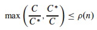
The CLRS text says both of these at once in one expression shown to the right. The ratio is never less than 1 (perfect performance).
An algorithm that has an approximation ratio of ρ(n) is called a ρ(n)-approximation algorithm.
An approximation scheme is a parameterized approximation algorithm that takes an additional input ε > 0 and for any fixed ε is a (1+ε)-approximation algorithm.
An approximation scheme is a polynomial approximation scheme if for any fixed ε > 0 the scheme runs in time polynomial in input size n. (We will not be discussing approximation schemes today; just wanted you to be aware of the idea. See section 35.5)
A Question
By definition, if a problem A is NP-Complete then if we can solve A in O(f(n)) then we can solve any other problem B in NP in O(g(n)) where g(n) is polynomially related to f(n). (A polynomial time reduction of the other problems to A exists.)
So, if we have a ρ(n)-approximation algorithm for the optimization version of A, does this mean we have a ρ(n)-approximation algorithm for the optimization version of any problem B in NP? Can we just use the same polynomial time reduction, and solve A, to get a ρ(n)-approximation for B?
That would be pretty powerful! Below we show we have a 2-approximation algorithm for NP-Hard Vertex Cover: so is 2-approximation possible for the optimization version of any problem in NP? (See problem 35.1-5.)
We examine two examples in detail before summarizing other approximation strategies.
Vertex Cover Approximations
Recall that a vertex cover of an undirected graph G = (V, E) is a subset V' ⊆ V such that if (u, v) ∈ E then u ∈ V' or v ∈ V' or both (there is a vertex in V' "covering" every edge in E).
The optimization version of the Vertex Cover Problem is to find a vertex cover of minimum size in G.
We previously showed by reduction of CLIQUE to VERTEX-COVER that the corresonding decision problem is NP-Complete, so the optimization problem is NP-Hard.
Approx-Vertex-Cover
Vertex Cover can be approximated by the following surprisingly simple algorithm, which iterately chooses an edge that is not covered yet and covers it:
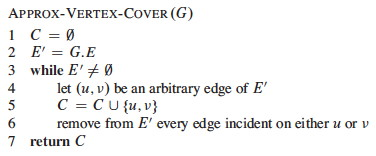
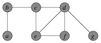
Example
Suppose we have this input graph:
Suppose then that edge {b, c} is chosen. The two incident vertices are added to the cover and all other incident edges are removed from consideration:
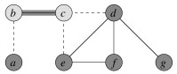
Iterating now for edges {e, f} and then {d, g}:
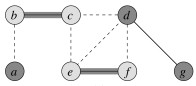 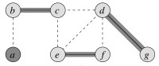
The resulting vertex cover is shown on the left and the optimal vertex on the right:
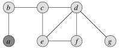 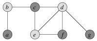
(Would the approximation bound be tighter if we always chose an edge with the highest degree vertex remaining? Let's try it on this example. Would it be tighter in general? See 35.1-3.)
Analysis
How good is the approximation? We can show that the solution is within a factor of 2 of optimal.
Theorem: Approx-Vertex-Cover is a polynomial time 2-approximation algorithm for Vertex Cover.
Proof: The algorithm is correct because it loops until every edge in E has been covered.
The algorithm has O(|E|) iterations of the loop, and (using aggregate analysis, Topic 15) across all loop iterations, O(|V|) vertices are added to C. Therefore it is O(E + V), so is polynomial.
It remains to be shown that the solution is no more than twice the size of the optimal cover. We'll do so by finding a lower bound on the optimal solution C*.
Let A be the set of edges chosen in line 4 of the algorithm. Any vertex cover must cover at least one endpoint of every edge in A. No two edges in A share a vertex (see algorithm), so in order to cover A, the optimal solution C* must have at least as many vertices:
| A | ≤ | C* |
Since each execution of line 4 picks an edge for which neither endpoint is yet in C and adds these two vertices to C, then we know that
| C | = 2 | A |
Therefore:
| C | ≤ 2 | C* |
That is, |C| cannot be larger than twice the optimal, so is a 2-approximation algorithm for Vertex Cover.
This is a common strategy in approximation proofs: we don't know the size of the optimal solution, but we can set a lower bound on the optimal solution and relate the obtained solution to this lower bound.
Problems
Can you come up with an example of a graph for which Approx-Vertex-Cover always gives a suboptimal solution?
Suppose we restrict our graphs to trees. Can you give an efficient greedy algorithm that always finds an optimal vertex cover for trees in linear time?
TSP Approximations
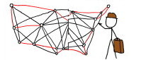
In the Traveling Salesperson Problem (TSP) we are given a complete undirected graph G = (V, E) (representing, for example, routes between cities) that has a nonnegative integer cost c(u, v) for each edge {u, v} (representing distances between cities), and must find a Hamiltonian cycle or tour with minimum cost. We define the cost of such a cycle A to be the sum of the costs of edges:
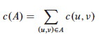
The unrestricted TSP is very hard, so we'll start by looking at a common restriction.
Triangle Inequality TSP
In many applications (e.g., Euclidean distances on two dimensional surfaces), the TSP cost function satisfies the triangle inequality:
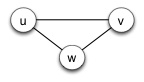
c(u, v) ≤ c(u, w) + c(w, v), ∀ u, v, w ∈ V.
Essentially this means that it is no more costly to go directly from u to v than it would be to go between them via a third point w.
Approximate Tour for Triangle Inequality TSP
The triangle inequality TSP is still NP-Complete, but there is a 2-approximation algorithm for it. The algorithm finds a minimum spanning tree (Topic 17), and then converts this to a low cost tour:
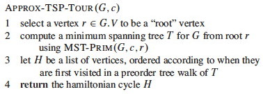
(Another MST algorithm might also work.)
Example
Suppose we are working on the graph shown below to the left. (Vertices are placed on a grid so you can compute distances if you wish.) The MST starting with vertex a is shown to the right.
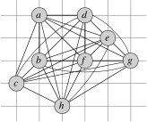 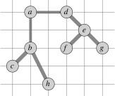
Recall from early in the semester (or ICS 241) that a preorder walk of a tree visits a vertex before visiting its children. Starting with vertex a, the preorder walk visits vertices in order a, b, c, h, d, e, f, g. This is the basis for constructing the cycle in the center (cost 19.074). The optimal solution is shown to the right (cost 14.715).
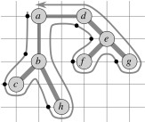 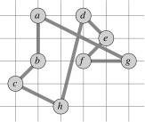 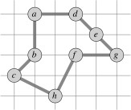
Analysis of Approx-TSP-Tour
Theorem: Approx-TSP-Tour is a polynomial time 2-approximation algorithm for TSP with triangle inequality.
Proof: The algorithm is correct because it produces a Hamiltonian circuit.
The algorithm is polynomial time because the most expensive operation is MST-
Prim, which can be computed in O(E lg V) (see Topic 17 notes).
For the approximation result, let T be the spanning tree found in line 2, H be the tour found and H* be an optimal tour for a given problem.
If we delete any edge from H, we get a spanning tree that can be no cheaper than the minimum spanning tree T, because H has one more (nonegative cost) edge than T:
c(T) ≤ c(H*)
Consider the cost of the full walk W that traverses the edges of T exactly twice starting at the root. (For our example, W is ⟨{a, b}, {b, c}, {c, b}, {b, h}, {h, b}, {b, a}, {a, d}, ... {d, a}⟩.) Since each edge in T is traversed twice in W:
c(W) = 2 c(T)
This walk W is not a tour because it visits some vertices more than once, but we can skip the redundant visits to vertices once we have visited them, producing the same tour H as in line 3. (For example, instead of ⟨{a, b}, {b, c}, {c, b}, {b, h}, ... ⟩, go direct: ⟨{a, b}, {b, c}, {c, h}, ... ⟩.)
By the triangle inequality, which says it can't cost any more to go direct between two vertices,
c(H) ≤ c(W)
Noting that H is the tour constructed by Approx-TSP-Tour, and putting all of these together:
c(H) ≤ c(W) = 2 c(T) ≤ 2 c(H*)
So, c(H) ≤ 2 c(H*), and thus Approx-TSP-Tour is a 2-approximation
algorithm for TSP. (The CLRS text notes that there are even better solutions,
such as a 3/2-approximation algorithm.)
Closest Point Heuristic
Another algorithm that is a 2-approximation on the triangle inequality TSP is the closest point heuristic, in which one starts with a trivial cycle including a single arbitrarily chosen vertex, and at each iteration adds the next closest vertex not on the cycle until the cycle is complete.
The General TSP
Above we got our results using a restriction on the TSP. Unfortunately, the general problem is harder ...
Theorem: If P ≠ NP, then for any constant ρ ≥ 1 there is no polynomial time approximation algorithm with ratio ρ for the general TSP.
The proof by contradiction shows that if there were such an approximation one can solve instances of Hamiltonian Cycle in polynomial time. Since Hamiltonian Cycle is NP-Complete, then P = NP. The proof uses a reduction similar to that used in Topic 24, where edges for TSP graph G' are given unit cost only if the corresponding edge is in the edge-set E for the Hamiltonian Cycle problem graph G:
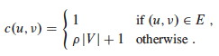
For any ρ(n) ≥ 1, a TSP approximation algorithm will choose the edges of cost 1 in G' (because to include even one edge not in E would exceed the approximation ratio), thereby finding a Hamiltonian Cycle in G if such a cycle exists. (See text for details.)
Hierarchy of Problem Difficulty
We have just seen that even within NP, some problems are harder than others in terms of whether they allow approximations.
The proof technique of reduction to NP-Complete problems has been used to organize the class NPC into problems that can be polynomially approximated and those that cannot under the assumption that P ≠ NP. Further discussion can be found in Garey and Johnson (1979).
You can probably guess that the answer to the question I raised in the beginning concerning transfer of ρ(n)-approximation across problem reductions is negative, but _ why would that be the case? Why aren't approximation properties carried across problem reductions?_
Two Strategies
Various reusable strategies for approximations have been found, two of which we review briefly here.
Randomized Approximations
The approximation ratio ρ(n) of a randomized algorithm is based on its expected cost C. Otherwise the definition is the same.
A randomized algorithm that achieves an expected cost within a factor ρ(n) of the optimal cost C* is called a ** randomized ρ(n)-approximation algorithm**.
Max-3-CNF Satisfiability
Recall that 3-CNF-SAT (Topic 24) asks whether a boolean formula in 3-conjunctive normal form (3-CNF) is satisfiable by an assignment of truth values to the variables.
The Max-3-CNF variation is an optimization problem that seeks to maximize the number of conjunctive clauses evaluating to 1. We assume that no clause contains both a variable and its negation.
Amazingly, a purely random solution is expected to be pretty good:
Theorem: The randomized algorithm that independently sets each variable of MAX-3-CNF to 1 with probability 1/2 and to 0 with probabilty 1/2 is a randomized 8/7-approximation algorithm.
Proof: Given a MAX-3-CNF instance with n variables x1 ... xn and m clauses, set each variable randomly to either 0 or 1 with probability 1/2 in each case. Define the indicator random variable (Topic 5):
Yi = I{clause i is satisfied}.
A clause is only unsatisfied if all three literals are 0, so Pr{clause i is not satisfied} = (1/2)3 = 1/8. Thus, Pr{clause i is satisfied} = 7/8. By an important lemma from Topic 5, E[Yi] = 7/8.
Let Y = Σ Y1 ... Ym be the number of clauses satisified overall. Then:
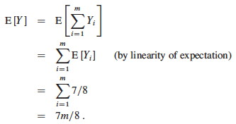
Since m is the upper bound C* on the number of satisfied clauses, the approximation ratio C* / C is
m / (7m/8) = 8/7.
The restriction on a variable and its negation can be lifted. This is just an example: randomization can be applied to many different problems − but don't always expect it to work out so well!
Linear Programming Approximations
Sometimes we can "relax" a problem to make it amenable to linear programming (Topic 21). For example ...
Minimum-Weight Vertex-Cover
In the minimum-weight vertex-cover problem, we are given an undirected graph G = (V, E), and a weight function w(v) ≥ 0 for v ∈ V. We define the weight of a vertex cover V' to be Σv∈V'w(v) and seek to find a vertex cover of minimum weight.
Linear Programming Relaxation
Let each vertex v ∈ V be associated with a variable x(v), which is 1 iff v in the vertex cover and 0 otherwise.
Since any edge (u, v) must be covered, x(u) + x(v) ≥ 1. This leads to the NP-Hard 0-1 integer linear program:
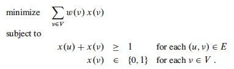
Now let's "relax" the formulation to allow x(v) to range over 0 ≤ x(v) ≤ 1. Then the problem can be written as this linear programming relaxation:

Since a solution to the 0-1 integer version of the problem is a legal solution to the relaxed version of the problem, the value of an optimal solution to this latter relaxed program gives a lower bound on the value of an optimal solution to the 0-1 integer problem.
The solution to the relaxed linear program can be converted to an approximation of the integer linear program with this algorithm:
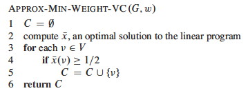
This procedure essentially "rounds" the fractional values to 0 or 1.
Analysis
Theorem: Approx-Min-Weight-VC is a polynomial 2-approximation algorithm
for the mimimum-weight vertex-cover problem.
Proof: There is a polynomial time algorithm for linear programming (line 2),
and lines 3-5 are also polynomial in time. So, Approx-Min-Weight-VC is
polynomial.
The result must be a vertex cover, since for any edge (u, v) the constraint x(u) + x(v) ≥ 1 implies that at least one of the vertices must have a value of 1/2, so is included in the vertex cover by lines 4-5 of the algorithm, thereby covering the edge.
To show 2-approximation, let C* be an optimal solution and let z* be the value of the solution to the relaxed linear program shown above.
An optimal solution C* must be a feasible solution to the relaxed linear program for which z* is an optimal solution, so z* cannot be any worse than C*:
z* ≤ w(C*)
We've already established that every edge is covered. We bound the weight of this cover from above by transforming the value of the optimal solution to the relaxed problem:
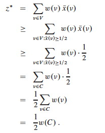
So, w(C) ≤ 2 z. This result with the prior result of z ≤ w(C*) gives:
w(C) ≤ 2z* ≤ 2w(C*)
That is, w(C) ≤ 2w(C*), so we have 2-approximation.
Other Examples
It is worth reading the other examples in the text.
Section 35.3 shows how the Set Covering Problem, which has many applications, can be approximated using a simple greedy algorithm with a logarithmic approximation ratio.
Section 35.5 uses the Subset Sum problem to show how an exponential but optimal algorithm can be transformed into a fully polynomial time approximation scheme, meaning that we can give the algorithm a parameter specifying the desired approximation ratio.
Many more examples are suggested in the problem set for the chapter.
Summary of Strategies
Faced with an NP Hard optimization problem, your options include:
- Use a known exponential algorithm and stick to small problems.
- Figure out whether you can restrict your problem to a special case for which polynomial solutions are known.
- Give up on optimality, and find or design an approximation algorithm that gives "good enough" results. Strategies include:
- Design a clever approximation using some heuristic (e.g., as for vertex cover and TSP in this lecture).
- Model the problem as an integer linear program and relax it to allow real valued solutions that are then used (e.g. by rounding) to determine an approximate integer solution.
- Get lucky and show that randomly choosing a solution is good enough!
Dan Suthers Last modified: Mon Jan 13 19:12:25 HST 2014
Images are from the instructor's material for Cormen et al. Introduction to
Algorithms, Third Edition, and from Garey & Johnson (1979), Computers and
Intractability.